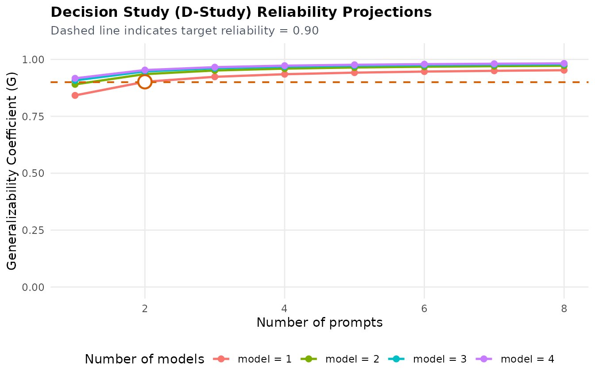
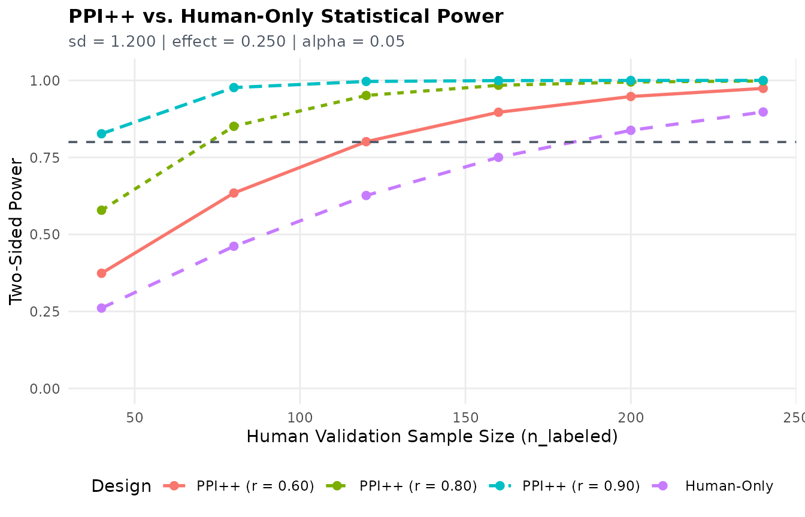
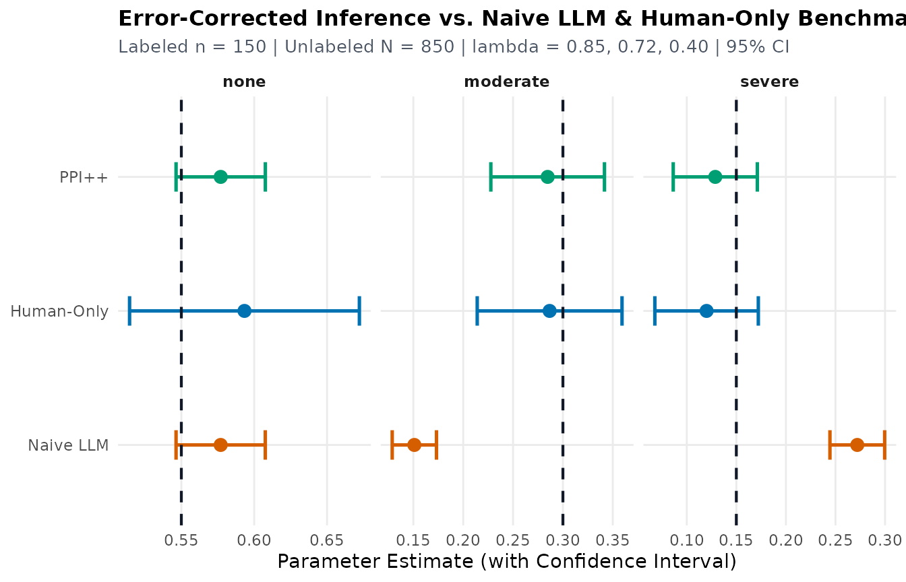

Designing Validation Studies: G/D-Studies, Sample Sizing, Prevalence PPI, and APA Reporting
Source:vignettes/designing-validation-studies.Rmd
designing-validation-studies.RmdPlanning an LLM-Assisted Research Study From Start to Finish
A rigorous LLM measurement study requires answering four quantitative design questions before spending API budget or human annotator hours:
-
Instrument reliability (
g_study()&d_study()): How many prompt paraphrases and models should we average per text to hit reliability at minimum cost? -
Human validation sample size (
ppi_sample_size()&ppi_power()): Given a corpus of texts and pilot LLM-human correlation , how many texts must humans double-code to reach target precision or 80% statistical power? -
Categorical prevalence estimation
(
ppi_proportion()): When coding discrete survey themes or clinical categories, how do we obtain valid marginal and simultaneous confidence intervals for class prevalences? -
Resumable execution & reporting
(
code_texts()+format_apa_table()): How do we protect large batch runs against mid-run API failures and export clean APA 7th-edition tables?
1. Cost-Aware D-Study Optimization
Using the built-in ema_coded pilot dataset (120 diary
entries crossed with 3 prompts
2 models), we estimate variance components via REML and optimize the
facet design under unequal costs (suppose running an extra model costs
as much as running an extra prompt paraphrase):
data(ema_coded)
g <- g_study(ema_coded, score_col = "llm_score", facets = c("prompt", "model"))
format_apa_table(g)
#> **Generalizability Study Variance Component Decomposition**
#>
#> | Component | Variance | SD | % Total | Role |
#> | --- | --- | --- | --- | --- |
#> | unit_id | 1.741 | 1.320 | 82.1 | Universe Score |
#> | prompt | 0.022 | 0.148 | 1.0 | Absolute Error Only |
#> | model | 0.005 | 0.071 | 0.2 | Absolute Error Only |
#> | unit_id:prompt | 0.101 | 0.318 | 4.8 | Relative & Absolute Error |
#> | unit_id:model | 0.053 | 0.229 | 2.5 | Relative & Absolute Error |
#> | prompt:model | 0.025 | 0.158 | 1.2 | Absolute Error Only |
#> | Residual | 0.173 | 0.416 | 8.2 | Relative & Absolute Error |
#>
#> *Note.* Units = 120; G (Erho^2) = 0.951; Phi = 0.944; estimation method = REML.
d_cost <- d_study(
g,
grid = list(prompt = 1:8, model = 1:4),
target = 0.90,
metric = "g",
costs = c(prompt = 1, model = 3)
)
d_cost
#>
#> ── Decision Study (D-Study) Projections
#> Evaluated 32 designs | Target: G (Erho^2) >= 0.90
#> Lowest-cost recommended design: prompt=2, model=1 (2 calls/unit -> G = 0.902,
#> Phi = 0.889)
#> # A tibble: 2 × 10
#> prompt model n_replicates total_calls cost g_coef phi_coef sem_relative
#> <int> <int> <int> <dbl> <dbl> <dbl> <dbl> <dbl>
#> 1 2 1 1 2 5 0.902 0.889 0.436
#> 2 1 3 1 3 10 0.908 0.893 0.420
#> # ℹ 2 more variables: sem_absolute <dbl>, meets_target <lgl>
autoplot(d_cost)
The D-study identifies the Pareto-minimal, lowest-cost combination
hitting
and reveals via d_cost$asymptotes whether adding more
prompts alone eventually plateaus due to unit:model
interaction variance.
2. Sizing the Human Validation Subset
(ppi_sample_size() & ppi_power())
Once the pilot validation subset is coded,
ppi_sample_size() computes the exact number of human
annotations needed for either a target standard error
(target_se) or target two-sided statistical power
(effect + power), accounting for the finite
corpus floor
:
agg <- aggregate_scores(ema_coded, score_col = "llm_score")
pilot_fit <- ppi_lm(human_score ~ x + group, data = agg, pred_col = "llm_score")
# Plan a full study of 2,000 EMA entries targeting SE <= 0.06 on predictor x
plan_se <- ppi_sample_size(
target_se = 0.06,
n_total = 2000,
pilot = pilot_fit,
term = "x"
)
plan_se
#>
#> ── PPI++ Human Validation Sample-Size Plan
#> Inputs (pilot_ppi++): sd = 1.163 | r = 1.000 | Target SE = 0.0600
#> Required human validation n = 20 (vs. 376 human-only -> saves 356 annotations,
#> 94.7%)
#> Projected PPI++ SE = 0.0261 | Effective n = 1980.4
# Plan for 80% power to detect effect = 0.25 with sd = 1.2 and LLM correlation r = 0.82
plan_pow <- ppi_sample_size(
effect = 0.25,
power = 0.80,
sd = 1.2,
r = 0.82,
n_total = 2000
)
plan_pow
#>
#> ── PPI++ Human Validation Sample-Size Plan
#> Inputs (supplied): sd = 1.200 | r = 0.820 | Target SE = 0.0892
#> Required human validation n = 64 (vs. 181 human-only -> saves 117 annotations,
#> 64.6%)
#> Projected PPI++ SE = 0.0886 | Effective n = 183.3 | Power = 0.805We can also visualize how statistical power scales across human validation sizes and LLM-human correlations relative to human-only estimation:
pw <- ppi_power(
n_labeled = seq(40, 240, by = 40),
n_total = 2000,
effect = 0.25,
sd = 1.2,
r = c(0.60, 0.80, 0.90)
)
pw
#>
#> ── PPI++ Precision & Power Projections
#> Source: supplied | sd = 1.200 | effect = 0.250 | alpha = 0.05
#> # A tibble: 18 × 10
#> n_labeled n_unlabeled n_total r se_human se_ppi var_reduction effective_n
#> <int> <int> <int> <dbl> <dbl> <dbl> <dbl> <dbl>
#> 1 40 1960 2000 0.6 0.190 0.153 1.55 61.8
#> 2 80 1920 2000 0.6 0.134 0.109 1.53 122.
#> 3 120 1880 2000 0.6 0.110 0.0891 1.51 181.
#> 4 160 1840 2000 0.6 0.0949 0.0776 1.50 239.
#> 5 200 1800 2000 0.6 0.0849 0.0698 1.48 296.
#> 6 240 1760 2000 0.6 0.0775 0.0640 1.46 351.
#> 7 40 1960 2000 0.8 0.190 0.116 2.68 107.
#> 8 80 1920 2000 0.8 0.134 0.0833 2.59 207.
#> 9 120 1880 2000 0.8 0.110 0.0691 2.51 301.
#> 10 160 1840 2000 0.8 0.0949 0.0608 2.43 389.
#> 11 200 1800 2000 0.8 0.0849 0.0553 2.36 472.
#> 12 240 1760 2000 0.8 0.0775 0.0512 2.29 549.
#> # ℹ 6 more rows
#> # ℹ 2 more variables: power_human <dbl>, power_ppi <dbl>
autoplot(pw, metric = "power")
3. Categorical Prevalence Estimation
(ppi_proportion())
Many text-coding workflows estimate population category
prevalences (e.g., percentage of clinical notes showing
"none", "moderate", or "severe"
symptoms). Even modest classifier confusion dramatically biases Naive
LLM proportions. ppi_proportion() estimates class
prevalences with optimal per-category power-tuning
and optional Bonferroni-adjusted simultaneous confidence intervals
(simultaneous = TRUE):
set.seed(2030)
lvls <- c("none", "moderate", "severe")
true_probs <- c(none = 0.55, moderate = 0.30, severe = 0.15)
n_tot <- 1000L
y_true <- factor(sample(lvls, n_tot, replace = TRUE, prob = true_probs), levels = lvls)
# LLM systematically over-classifies "moderate" cases as "severe"
y_llm <- y_true
flip <- (y_true == "moderate") & (runif(n_tot) < 0.45)
y_llm[flip] <- "severe"
prop_df <- tibble::tibble(
human_cat = factor(c(as.character(y_true[1:150]), rep(NA_character_, n_tot - 150L)), levels = lvls),
llm_cat = y_llm
)
fit_prop <- ppi_proportion(prop_df, truth_col = "human_cat", pred_col = "llm_cat")
fit_prop_sim <- ppi_proportion(prop_df, truth_col = "human_cat", pred_col = "llm_cat", simultaneous = TRUE)
format_apa_table(fit_prop)
#> **Comparison of Naive LLM, Human-Only, and PPI++ Parameter Estimates**
#>
#> | Term | Estimator | Estimate | SE | 95% CI | p | Eff. Gain |
#> | --- | --- | --- | --- | --- | --- | --- |
#> | none | Naive LLM | 0.577 | 0.016 | [0.546, 0.608] | < .001 | -- |
#> | none | Human-Only | 0.593 | 0.040 | [0.514, 0.672] | < .001 | 1.00x |
#> | none | PPI++ | 0.577 | 0.016 | [0.546, 0.608] | < .001 | 6.62x |
#> | moderate | Naive LLM | 0.151 | 0.011 | [0.129, 0.173] | < .001 | -- |
#> | moderate | Human-Only | 0.287 | 0.037 | [0.214, 0.359] | < .001 | 1.00x |
#> | moderate | PPI++ | 0.285 | 0.029 | [0.228, 0.342] | < .001 | 1.62x |
#> | severe | Naive LLM | 0.272 | 0.014 | [0.244, 0.300] | < .001 | -- |
#> | severe | Human-Only | 0.120 | 0.027 | [0.068, 0.172] | < .001 | 1.00x |
#> | severe | PPI++ | 0.129 | 0.022 | [0.086, 0.171] | < .001 | 1.51x |
#>
#> *Note.* Labeled validation n = 150; unlabeled LLM N = 850; power-tuning lambda = 0.85, 0.72, 0.40. Eff. Gain denotes variance reduction (effective sample-size multiplier) relative to Human-Only.
autoplot(fit_prop, true_values = true_probs)
Naive LLM inflates "severe" prevalence from the true
0.15 to nearly 0.29, whereas PPI++ recovers
all three prevalences accurately with substantially tighter CIs than
Human-Only.
4. Resumable Checkpointed Batch Coding
For large-scale API runs, supply both a disk
coding_cache("disk", dir = ...) and a
checkpoint_file in code_texts(). Completed
cells are atomically checkpointed so transient rate limits never waste
already-paid API calls:
tmp_dir <- tempfile("llmmetric_ckpt_")
dir.create(tmp_dir)
ckpt_file <- file.path(tmp_dir, "run_checkpoint.rds")
mini_corpus <- tibble::tibble(
id = paste0("doc_", 1:10),
text = paste("Open-ended survey response", 1:10),
true_score = seq(-1, 1, length.out = 10)
)
des <- coding_design(
prompts = c(p1 = "Score: {text}"),
models = "mock_m1",
schema = coding_schema(score = schema_field("numeric"))
)
run1 <- code_texts(
mini_corpus, text_col = "text", id_col = "id",
design = des, backend = backend_mock(seed = 7),
cache = coding_cache("none"),
checkpoint_file = ckpt_file,
checkpoint_every = 5L
)
# Re-running against the same checkpoint restores all 10 completed cells immediately
run2 <- code_texts(
mini_corpus, text_col = "text", id_col = "id",
design = des, backend = backend_mock(seed = 7),
cache = coding_cache("none"),
checkpoint_file = ckpt_file
)
c(resumed_cells = run2$resumed_count, total_cells = nrow(run2$scores))
#> resumed_cells total_cells
#> 10 10
# Clean up temporary directory
unlink(tmp_dir, recursive = TRUE)5. Publication-Ready APA Reporting Tables
format_apa_table() exports Markdown, tibble, or LaTeX
booktabs tables formatted to APA 7th-edition conventions
(no leading zero on
-values,
< .001, bracketed 95% CIs, and effective sample-size
gain):
fit_ml <- ppi_lmer(human_score ~ x + group + (1 | cluster), data = agg, pred_col = "llm_score")
format_apa_table(fit_ml, format = "markdown", include_intercept = FALSE)
#> **Comparison of Naive LLM, Human-Only, and PPI++_CLUSTERED Parameter Estimates**
#>
#> | Term | Estimator | Estimate | SE | 95% CI | p | Eff. Gain |
#> | --- | --- | --- | --- | --- | --- | --- |
#> | x | Naive LLM | 0.883 | 0.077 | [0.724, 1.041] | < .001 | -- |
#> | x | Human-Only | 1.043 | 0.179 | [0.673, 1.413] | < .001 | 1.00x |
#> | x | PPI++_CLUSTERED | 1.029 | 0.087 | [0.852, 1.207] | < .001 | 4.27x |
#> | groupgroup_b | Naive LLM | 1.296 | 0.129 | [1.033, 1.559] | < .001 | -- |
#> | groupgroup_b | Human-Only | 0.579 | 0.243 | [0.078, 1.080] | .025 | 1.00x |
#> | groupgroup_b | PPI++_CLUSTERED | 0.705 | 0.168 | [0.361, 1.049] | < .001 | 2.08x |
#>
#> *Note.* Labeled validation n = 50; unlabeled LLM N = 70; power-tuning lambda = 0.604. Eff. Gain denotes variance reduction (effective sample-size multiplier) relative to Human-Only.